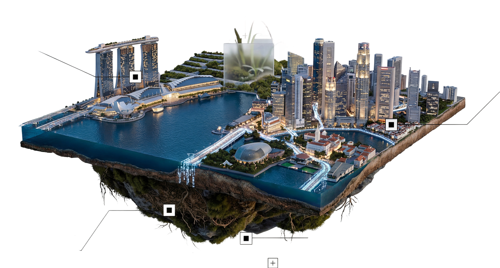

Backed by years of industry experience, we deliver digital solutions built for real-world operations.
Connect live data, systems, and assets into one operational layer — giving teams real-time visibility, situational awareness, and faster response across the built environment.